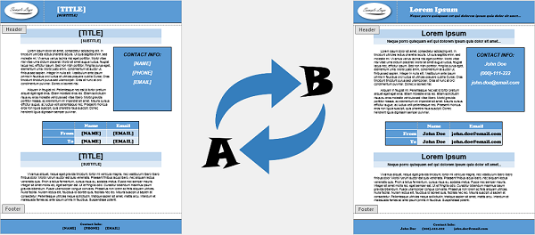

Find and Replace text in a Word document
From the following link, you can download the latest version of the C# source code for the FindAndReplace .NET application:
Download FindAndReplace.zip
Introduction
Searching a Word document's text and replacing it with text from a .NET application is a rather common task. This article will mention various approaches that we can use and also show how we can search and replace the Word document's text using only the .NET Framework (without using any third-party code). To follow the implementation details, a basic knowledge of WordprocessingML is required.

Details
If we have the option to use Word Automation (which requires having MS Word installed), then we can achieve the find and replace functionality with an API provided by Word Interop, as demonstrated
here. Another way would be to read the whole main part of the DOCX file (document.xml) as
string and perform a find and replace on it, as demonstrated
here. This simple approach may be enough, but a problem occurs when the searched text is not the value of a single XML element, for example, consider the following DOCX file:

Picture 1: Hello World sample document
The document's main part will look something like the following:
<p>
<r>
<rPr><color val="FF0000"/></rPr>
<t>Hello </t>
</r>
<r>
<rPr><color val="0000FF"/></rPr>
<t>World</t>
</r>
</p>
Another situation, for example, is the following:
<p>
<r>
<t>Hello</t>
<t> </t>
<t>World</t>
</r>
</p>
So the text that we're looking for inside our Word document may span over multiple elements and we need to consider this when searching for it.
Implementation
We'll open the Word document and present it with a FlatDocument object. This object will read document parts (like the body, headers, footers, comments, etc.) and store them as a collection of
XDocument objects. The FlatDocument object will also create a set of
FlatTextRange objects that represent searchable parts of the document's text content (a single
FlatTextRange can represent a single paragraph, a single hyperlink etc.). Each
FlatTextRange will contain FlatText objects that have an indexed text content (FlatText.StartIndex and
FlatText.EndIndex represent the FlatText's text location inside the
FlatTextRange's text).
Steps
- Open Word document:
public sealed class FlatDocument : IDisposable
{
public FlatDocument(string path) :
this(File.Open(path, FileMode.Open, FileAccess.ReadWrite)) { }
public FlatDocument(Stream stream)
{
this.documents = XDocumentCollection.Open(stream);
this.ranges = new List<FlatTextRange>();
this.CreateFlatTextRanges();
}
// ...
} - Iterate through the Run elements of the supported document parts (body, headers, footers, comments, endnotes and footnotes, which are loaded as
XDocumentobjects) and createFlatTextRangeandFlatTextinstances:public sealed class FlatDocument : IDisposable
{
private void CreateFlatTextRanges()
{
foreach (XDocument document in this.documents)
{
FlatTextRange currentRange = null;
foreach (XElement run in document.Descendants(FlatConstants.RunElementName))
{
if (!run.HasElements)
continue;
FlatText flatText = FlattenRunElement(run);
if (flatText == null)
continue;
// If the current Run doesn't belong to the same parent
// (like a paragraph, hyperlink, etc.),
// create a new FlatTextRange, otherwise use the current one.
if (currentRange == null || currentRange.Parent != run.Parent)
currentRange = this.CreateFlatTextRange(run.Parent);
currentRange.AddFlatText(flatText);
}
}
}
// ...
} - Flatten Run elements, which splits a single Run element into multiple sequential Run elements that have a single content child element (and optionally the first RunProperties child element). Create a
FlatTextobject from the flat Run element:
Picture 2: Flatten Run element

Picture 3: Flat objects

Picture 4: Flat objects text content
public sealed class FlatDocument : IDisposable
{
private static FlatText FlattenRunElement(XElement run)
{
XElement[] childs = run.Elements().ToArray();
XElement runProperties = childs[0].Name == FlatConstants.RunPropertiesElementName ?
childs[0] : null;
int childCount = childs.Length;
int flatChildCount = 1 + (runProperties != null ? 1 : 0);
// Break the current Run into multiple Run elements that have one child,
// or two children if it has RunProperties element as a first child.
while (childCount > flatChildCount)
{
// Move the last child element from the current Run into the new Run,
// which is added after the current Run.
XElement child = childs[childCount - 1];
run.AddAfterSelf(
new XElement(FlatConstants.RunElementName,
runProperties != null ? new XElement(runProperties) : null,
new XElement(child)));
child.Remove();
--childCount;
}
XElement remainingChild = childs[childCount - 1];
return remainingChild.Name == FlatConstants.TextElementName ?
new FlatText(remainingChild) : null;
}
// ...
} - Perform find and replace over
FlatTextRangeinstances:public sealed class FlatDocument : IDisposable
{
public void FindAndReplace(string find, string replace)
{
this.FindAndReplace(find, replace, StringComparison.CurrentCulture);
}
public void FindAndReplace(string find, string replace, StringComparison comparisonType)
{
this.ranges.ForEach(range => range.FindAndReplace(find, replace, comparisonType));
}
// ...
}
internal sealed class FlatTextRange
{
public void FindAndReplace(string find, string replace, StringComparison comparisonType)
{
int searchStartIndex = -1, searchEndIndex = -1, searchPosition = 0;
while ((searchStartIndex =
this.rangeText.ToString().IndexOf(find, searchPosition, comparisonType)) != -1)
{
searchEndIndex = searchStartIndex + find.Length - 1;
// Find FlatText that contains the beginning of the searched text.
LinkedListNode<FlatText> node = this.FindNode(searchStartIndex);
FlatText flatText = node.Value;
ReplaceText(flatText, searchStartIndex, searchEndIndex, replace);
// Remove next FlatTexts that contain parts of the searched text.
this.RemoveNodes(node, searchEndIndex);
this.ResetRangeText();
searchPosition = searchStartIndex + replace.Length;
}
}
// ...
} - Finally,
FlatDocument.Disposewill save theXDocumentparts and close the Word document.
Usage
The following sample code demonstrates how to use FlatDocument:
class Program
{
static void Main(string[] args)
{
// Open the Word file.
using (var flatDocument = new FlatDocument("Sample.docx"))
{
// Search and replace the document's text content.
flatDocument.FindAndReplace("Hello Word", "New Value 1");
flatDocument.FindAndReplace("Foo Bar", "New Value 2");
// ...
// Save the Word file on Dispose.
}
}
}
Points of Interest
An alternative algorithm to that above is to split a single Run element into multiple sequential Run elements that have a single child (the same as above), but in this case a single child element would contain only a single character:
<p>
<r>
<t>H</t>
</r>
<r>
<t>e</t>
</r>
<r>
<t>l</t>
</r>
<r>
<t>l</t>
</r>
<r>
<t>o</t>
</r>
<!--
...
-->
</p>
We would then iterate through those elements while looking for a sequence of matched characters. You can find the details and an implementation of this approach in the following article:
Search and Replace Text in an Open XML WordprocessingML Document This approach is actually used in the
Open XML PowerTools (TextReplacer class). However, the problem with both of these algorithms is that they do not work on content that spans over multiple paragraphs.
In this case, we would need to flatten the entire content of the Word document to search for the required text successfully.
GemBox.Document is a .NET component for processing Word files that presents a document with a
content model hierarchy that can be accessed as flat content through the
ContentRange class. With it, we are able to search for content that spans over multiple paragraphs. For details, see the following article:
Find and Replace in Word with C# or VB.NET With this approach, we are actually able to find any arbitrary content and replace it with any desired content (including tables, pictures, paragraphs, HTML formatted text, RTF formatted text, etc.).
Improvements
- Currently the replace text will have the same formatting as used at the beginning of the found text. However, we could consider providing a
FindAndReplaceoverload method that would accept the desired formatting (for example, something like:FlatDocument.FindAndReplace(string find, string replace, TextFormat format)). When the formatting is provided, we would need to create a new RunProperties element based on it. - Currently any special characters (like tabs, line breaks, non-breaking hyphens, etc.) in both the search and replace texts are not considered. For this,
FlatTextshould be aware of the different element types thatFlatText.textElementcan be (like <tab/>, <br/>, <noBreakHyphen/>, etc.) and return the appropriateFlatText.Textvalue based on it.